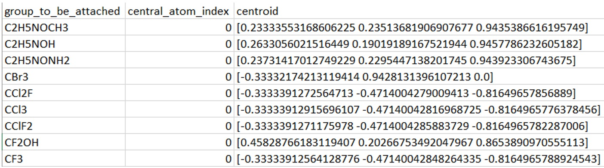

ChemSpaX¶
ChemSpaX can be used for local chemical space exploration of any structure. This is done by placing substuents on a skeleton. Two approaches were considered:
From a library of existing substituents choose a substituent and attach it the skeleton. See attach_substituent.py.
The user inputs an atom to be functionalized on a skeleton complex, then a tetrahedron is formed around this atom and this atom can be replaced. See generate_tetrahedron.py. This approach is outdated and not maintained
Installation¶
Python 3.6.0 or higher is recommended.
git clone https://github.com/EPiCs-group/chemspax
It is recommended to use a virtual environment. Anaconda can be used to manage virtual environments (using Anaconda allows the user to skip
compilation of openbabel from source):
Download the latest installer from
Anaconda’s website.
For example:
wget https://repo.anaconda.com/archive/Anaconda3-2020.07-Linux-x86_64.sh
Then run the installation script with:
bash Anaconda3-2020.07-Linux-x86_64.sh
The installation is pretty self explanatory, afterwards the following commands can be used to
create a virtual environment and activate it.
The environment will be named ‘chemspax’, the conda_env.yml file can be changed if a different name is required.
conda env create -f conda_env.yml
conda activate chemspax
Check if the environment is installed correctly by running
conda env list
More information on virtual environments can be found at the venv homepage or this Anaconda cheatsheet
Instructions¶
First, we need to prepare the xyz file of the skeleton to which we want to attach a substituent.
An example .xyz file of a skeleton in the skeletons/ folder looks like this:

In the functionalization_list each item is a functionalization. In the example figure shown below,
4 functionalizations are done.
The first item of each list (red circle) is the index of the atom_to_be_functionalized (the atom that will
be replaced by the substituent).
Since commit bf59491 all hydrogens are functionalized (used as atom_to_be_functionalized) if no functionalization_list is given in the skeleton’s xyz file (second line is empty). This preparation step can thus be skipped if the whole structure needs to be functionalized instead of specific indices.
Make sure to put no spaces in this functionalization_list. Since
sys.argv() is used in the main.py files, each space might be interpreted as a new argument
to the function. Also note that index 0 is the first atom in the xyz file.
In the example figure above, the index of Ru = 0.

The second item of each list (green circle) is the index of the bonded_atom, this is the skeleton’s atom that will be bonded to the substituent.

With these instructions the user should be able to
write the functionalization_list of the skeletons correctly to
the skeleton’s xyz file and this skeleton’s xyz file should be
moved to the skeletons/ folder (note: there should be no newline at the end of the xyz file!).
To attach a substituent to this skeleton, an
explanation is given on how to proceed with the next 2 steps.
attach_substituent.py¶
Note: Make sure to check the relative path on line 175, 88, 66
and 21 are correctly set if you want to use attach_substituent.py directly.
It is recommended to keep everything as default and use the
functionalize_and_optimize_obabel.sh or
functionalize_and_optimize_xtb.sh scripts instead, which will be explained.
1 Choosing from library/adding a substituent to library¶
The user can upload manually generated substituents to substituents_xyz/manually_generated/ or use the pre-made substituents contained in that folder.
Use pre-made substituents¶
Move skeleton’s xyz file to skeletons/ folder
Run data_preparation.py
Go to step 2
(optional) Add new substituent¶
I’ll take the example of methyl (which is already in the substituents_xyz/manually_generated folder):
Take an xyz file for (optimized) CH4, then remove one of the hydrogens, this is where the substituent will form a bond with the skeleton.
Let the C (central atom of the substituent) be the first atom in the list of atoms in the xyz file. (by moving C to the third line of the xyz file)
Save the xyz file in substituents_xyz/manually_generated
Run data_preparation.py to be able to use this substituent for functionalizations
Go to step 2
data_preparation.py is used to add the central atom and centroid vector per substituent to a .csv file as these will be used to align the substituent with the skeleton. This script also manages to conversion between .mol and .xyz files. Note that it is recommended to provide .mol files when available, since these provide correct connectivity data for a structure. data_preparation.py assumes that the central atom of the substituent (C in the case of CH3) is the first atom in the .xyz file of the substituent and that the central atom of the substituent has a free electron pair such that a new bond can be formed!
An example of the .csv file with information for each substituent as generated by data_preparation.py is shown below: 
After correct preparation of the xyz/mol files for the skeleton and (new) substituents and running data_preparation.py as explained above, we can move on to the next step.
2 Attaching substituent(s) to skeleton(s)¶
The user can use the
functionalize_and_optimize_obabel.sh or
functionalize_and_optimize_xtb.sh scripts to generate their functionalized complexes.
In these scripts the $STARTING_C_SUBSTITUENT should be the first substituent to place on the skeleton,
the $RANDOM_C_SUBSTITUENTS should be a list of substituents that should be added after that.
The amount of substituents should match the amount of functionalization sites specified in the
xyz file of the skeleton.
For example, if the user would like to place 4 methyl groups on a skeleton (as defined in the example skeleton xyz file in the pictures above)
and optimize each functionalization with
FF, functionalize_and_optimize_obabel.sh needs to be edited to:
# select 1 random substituent with C as central atom as starting point
STARTING_C_SUBSTITUENT="CH3"
# select 3 random substituents with C as central atom
RANDOM_C_SUBSTITUENTS="CH3 CH3 CH3"
After this edit the script can be run:
bash functionalize_and_optimize_obabel.sh C
If the STARTING_C_SUBSTITUENT and RANDOM_C_SUBSTITUENT variables are not modified, the C argument means that 6 random carbon substituents will be placed. Similarly, the P argument will call the functionalize_skeletons_P_substituents function and 6 random phosphorus substituents will be placed on the indicated sites of the skeleton. The P and CP arguments have not been tested as thoroughly as the C argument.
In the example shown here, 4 xyz and 4 .mol files in substituents_xyz/automatically_generated should be generated,
one for each functionalized structure. The .mol files contain the correcly optimized functionalized structures.
This workflow is similar if the user would like to optimize
every functionalized skeleton with xTB, but then the functionalize_and_optimize_xtb.sh
script should be edited and used.
Done¶
More information for devs:
The Complex.generate_substituent_and_write_xyz()
function from attach_substituent.py is used to functionalize a skeleton. The main_attach_substituent.py takes the following
input:
path_to_source_file
target_name (Note: name only, the file will always be placed in substituents_xyz/automatically_generated with extension .xyz)
name of substituent group (same as key in .csv database)
relative path to .csv database file
bond length between central atom of the substituent and bonded_atom of skeleton
(Not used currently) whether the user wants to use the python script with the xtb bash script, in the xtb bash script the conversion of the optimized .mol file to .xyz file doesn’t happen in python. If this is set to false only ff optimization will be done and the python script will handle file conversions.
Where each input value is given as a space delimited system argument. The user can modify the example of attach_substituent_folder/run.sh to their needs or use attach_substituent.py directly.
(outdated) generate_tetrahedron.py
Note: Make sure to check the relative path on line 124 is correctly set, relatively to your working directory. This script is not actively used anymore, it is recommended to use the approach described under attach_substituent.py.
To functionalize a skeleton using this approach, now the bond lengths between bonded_atom and central_atom of substituent and surrounding atoms of the substituent with central_atom of substituent is needed. The main_generate_tetrahedron.py takes input values as follows:
path_to_source_file
target_name (Note: name only, the file will always be placed in substituents_xyz/automatically_generated with extension .xyz)
bond length of new central atom of substituent with bonded_atom
actual new central atom of substituent
bond length of new central atom of substituent with first surrounding substituent atom
actual first surrounding substituent atom
same as 5) for second surrounding substituent atom
same as 6) for second surrounding substituent atom
same as 5) for third surrounding substituent atom
same as 6) for third surrounding substituent atom
Where each input value is given as a space delimited system argument. The user can modify the example of generate_tetrahedron_folder/run.sh to their needs or use generate_tetrahedron.py directly.
(outdated) Example usage of python scripts only¶
bash generate_tetrahedron_folder/run.shto functionalize a RuPNP skeleton where 4 H sites will be substituted for methyl groups using generate_tetrahedron.pybash attach_substituent_folder/run.shto functionalize a RuPNP skeleton where 6 sites will be functionalized with substituents
Contents¶
skeletons/
contains .xyz files of skeletons to be functionalized.
substituents_xyz/
contains .xyz files for substituents and functionalized skeletons
automatically_generated/: output of functionalized skeletons by attach_substituent.py. If functionalize_and_optimize_xtb.sh is used the xTB optimized structures are placed in the optimized_structures/ subfolder.
manually_generated/: Substituents that will be attached to skeletons in attach_substituent.py.
old/: contains substituents that became either obsolete or will be dealt with later.
visualizations/: contains .png files of the functionalizations made in generate_tetrahedron.py
Citation¶
If you use ChemSpaX, please cite: